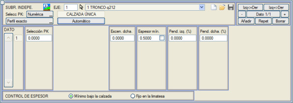
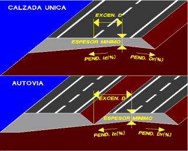

| |
|
BAĞIMSIZ TERASMAN
|
Eğer tip kesit tanımında Çatı Eğimi Sırtı tipi bağımsız (bağımsız terasman) olarak seçilmişse, bu kesitin uygulandığı kesimlerde bu menüde tanımlanan tablodan türetilen değerler kullanılır: 
Otoyollarda Çatı Eğimi Sırtı tek veya çift olabilir. İkinci durumda, her iki yarı enkesitte birer Çatı Eğimi Sırtı olacaktır. Tek Çatı Eğimi Sırtı durumunda, konumu geometrik eksenden sağ eksantrisite'de belirtilen veriden hesaplanır (eğer Çatı Eğimi Sırtı sol taraftaysa, negatif bir değer girilecektir). Çift Çatı Eğimi Sırtı durumunda, sağ eksantrisite ve sol eksantrisite değerleri mutlak değer olarak alınır. Terasman Çatı Eğimi Sırtının dış banketin altına, dış kenarına kadar olmasına izin verilir. Kalınlık kontrolü, Çatı Eğimi Sırtının konumu ve sol ile sağ eğimler dikkate alınarak en elverişsiz noktada, ana platformların altında, Platform altında minimum seçeneği etkinleştirilerek alınabilir veya Çatı mahyasında sabit seçeneği ile çatı mahyasının konumunda ölçülen sabit bir değer olarak alınabilir. [Kaydet]  ve [Yükle] ve [Yükle]  düğmeleri, bu diyalog kutusunun verilerini .cdf uzantılı dosyalar aracılığıyla kaydetmeye ve geri yüklemeye olanak tanır (formatı demiryollarının formasyon tabakası dosyalarıyla paylaşırlar). düğmeleri, bu diyalog kutusunun verilerini .cdf uzantılı dosyalar aracılığıyla kaydetmeye ve geri yüklemeye olanak tanır (formatı demiryollarının formasyon tabakası dosyalarıyla paylaşırlar). |